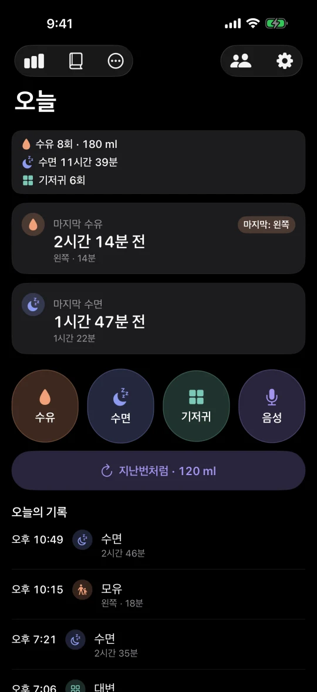
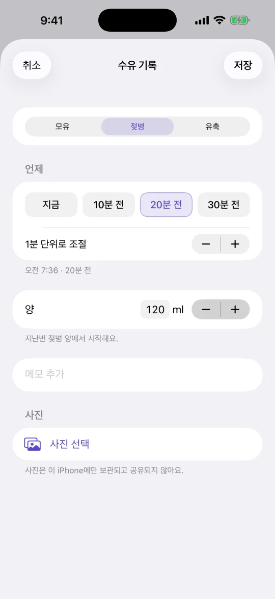
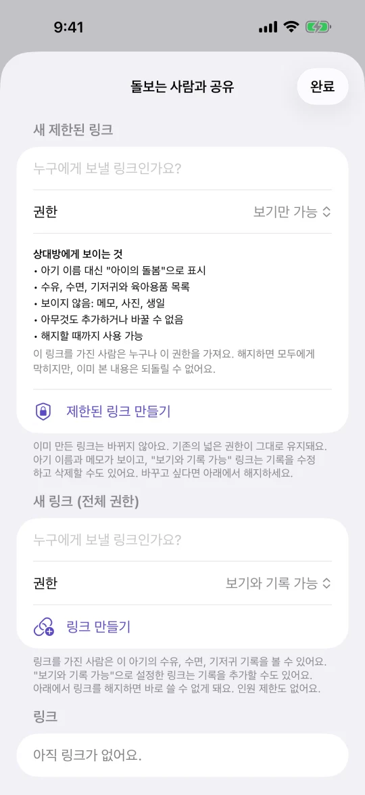
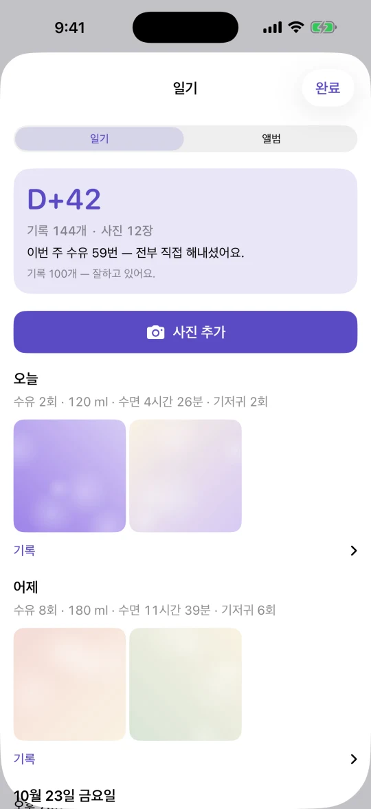
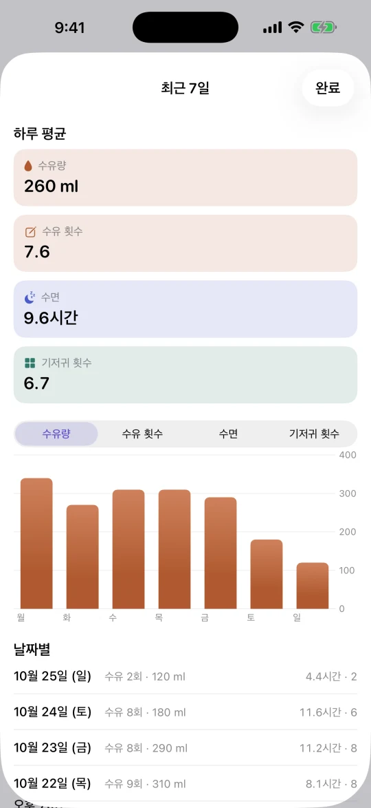
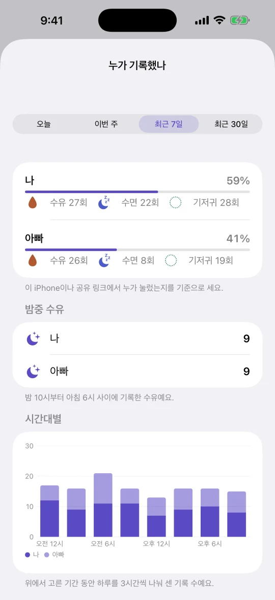
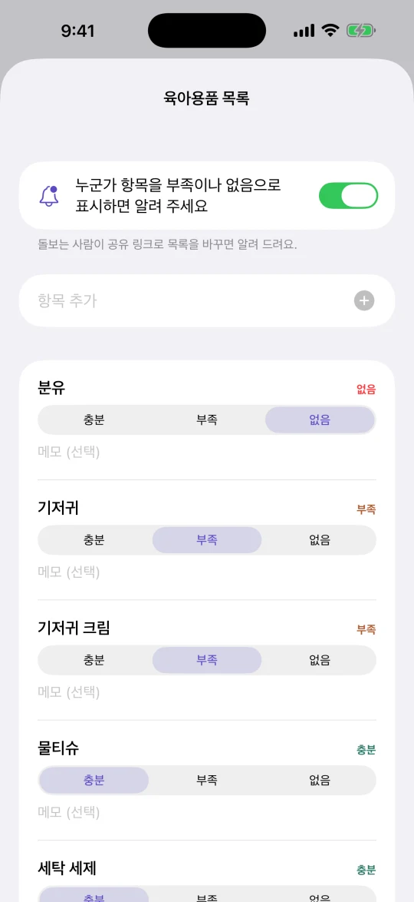
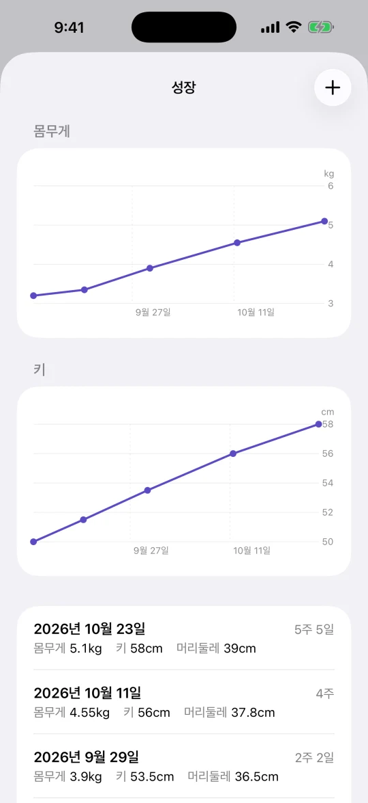

새벽 3시에도 두 번 누르면 끝나는 수유 기록
앱을 열지 않고 잠금화면에서, 목소리로, 또는 두 번의 탭으로 기록해요. 배우자, 조부모, 돌봄 선생님은 링크 하나만 열면 같은 기록을 함께 봅니다.
기록은 무료 · iPhone · iOS 17 이상
- 오프라인 우선
- 광고 없음
- 회원가입 없음
- 앱 안 열고 기록

앱 안 열고 기록
앱을 열지 않아도 기록돼요
잠금화면과 홈 화면 위젯에서 버튼 한 번으로 기록해요. 수유 타이머 시작, 지난번과 같은 젖병, 기저귀, 수면 타이머 시작을 바로 누를 수 있습니다.
Siri에게 "Lullog에서 젖병 기록"이라고 말하거나 단축어를 동작 버튼에 지정할 수 있어요. iOS 18에서는 제어 센터에 Lullog 버튼을 추가할 수 있습니다.
이 버튼들과 Siri, 음성 기록은 최신 버전의 Lullog에서 무료로 쓸 수 있어요. 위젯과 라이브 액티비티는 마지막 수유와 수면 이후 지난 시간도 보여 줘요. Lullog는 지난 시간을 보여 줄 뿐, 다음 수유 시간을 예측하지 않습니다.
음성
말로 기록해요
마이크를 누르고 "젖병 120"이나 "소변"이라고 말하면 기록이 저장되고 실행 취소 버튼이 나타나요.
음성은 iPhone 안에서만 인식되며 밖으로 나가지 않습니다. 한국어, 영어, 일본어, 중국어, 스페인어, 독일어, 프랑스어, 포르투갈어, 이탈리아어를 지원하고, 기기 내 인식을 쓸 수 없는 환경에서는 마이크 버튼이 보이지 않아요.
기록
깜빡 잊은 수유도 두 번이면 기록돼요
수유 버튼을 누르고 모유, 젖병, 유축 중 하나를 고른 뒤 저장하면 끝입니다. 기록을 놓쳤다면 시간 휠 대신 "10분 전", "20분 전", "30분 전"을 누르세요.
지난번과 같은 양이라면 오늘 화면의 "지난번처럼 · 120 ml"를 한 번만 누르면 돼요.
수유와 기저귀 기록에 사진을 붙일 수 있어요. 사진은 이 iPhone에만 보관되고 동기화되거나 공유되지 않습니다. 저장한 뒤 5초 동안은 실행 취소로 되돌릴 수 있어요. 기록을 밀어서 삭제하고 실행 취소할 수 있고, 눌러서 수정할 수도 있어요. 저장하지 못했을 때는 입력한 내용이 그대로 남아 있고 다시 시도를 누르면 돼요.
처음 며칠 기록하고 나면 오늘 화면에서 그 며칠을 짧게 정리해 보여 드려요. 무료예요.
원하면 알림도 켤 수 있어요. 정한 간격에 맞춘 다음 수유 알림(조용한 시간 설정 가능)과, 수면 타이머가 오래 켜져 있을 때 확인 알림이에요. iPhone에서 설정되는 로컬 알림이고, 직접 켜기 전에는 꺼져 있어요.

잠금화면
잠금을 풀지 않고 타이머를 멈춰요
수면이나 모유 수유 타이머가 돌아가는 동안 잠금화면 라이브 액티비티에 타이머와 정지 버튼이 보입니다. 정지를 누르면 기록이 저장돼요. Face ID나 암호도, 아기를 내려놓을 필요도 없습니다.
잠금화면 타이머는 다른 기록 기능처럼 무료예요.
공유
돌봐 주는 사람 모두에게 링크 하나
배우자, 조부모, 돌봄 선생님에게 링크를 보내세요. 받은 사람은 아무 브라우저에서 열어 기록을 보고, 허용하면 직접 기록도 남깁니다. 앱 설치도 회원가입도 필요 없고, 인원당 요금도 없어요.
사람마다 따로 링크를 만들고 "보기와 기록 가능" 또는 "보기만 가능"으로 정할 수 있습니다. 링크를 해지하면 바로 쓸 수 없게 돼요.
버전 1.3.2에서 제한 링크가 추가됐어요. 새 제한 링크는 기본으로 보기만 가능하고, 기록 추가를 허용할지는 직접 고릅니다. 기록을 허용한 제한 링크는 기록을 추가할 수 있지만 수정하거나 삭제할 수는 없어요. 이름과 메모는 제한 링크에 보이지 않습니다. 이전에 만든 링크는 그대로 동작하며 자동으로 바뀌거나 전환되지 않습니다.
공유 웹페이지에서 마지막 갱신 시각을 볼 수 있고, 연결이 끊겼을 때도 기록의 저장 여부를 확인할 수 있어요.
공유는 기본으로 꺼져 있고, 직접 "동기화 연결"을 눌러야 켜집니다. 그 전까지 기록은 iPhone 안에만 있고 어디로도 전송되지 않습니다. Lullog가 보내는 것은 설정에서 끌 수 있는 익명 사용 횟수 몇 가지뿐입니다.

일기
하루하루 쌓인 기록을 일기처럼
일기 화면은 날짜별 합계와 함께 붙인 사진을 모아 보여 줘요. 맨 위에는 태어난 지 며칠째인지 D+N으로, 지금까지의 기록 수와 사진 수가 표시됩니다.
연속 기록 같은 압박은 없어요. 일기는 무료입니다.

Lullog Lifetime
최근 7일을 한 화면에
하루 평균 수유량, 수유 횟수, 수면 시간, 기저귀 횟수를 막대 차트와 날짜별 목록으로 보여 줘요. 영유아 검진이나 가족과 이야기할 때 지난 일주일을 돌아볼 수 있습니다.
7일 요약, 일별 차트, CSV 내보내기는 1회 결제인 Lullog Lifetime에 포함돼요. Lullog Plus에도 모두 들어 있어요.

Lullog Plus
같은 팀이니까
밤중 수유도, 기저귀 챙기기도, 영유아 검진도 함께 하는 일이에요. 기본은 모두에게 열려 있어요. 누가 기록했나와 육아용품 목록은 결제 없이 쓸 수 있고, Lullog Plus는 온 가족을 위한 기능을 더해요. 오늘 화면의 더 보기 버튼에서 모두 찾을 수 있어요.



- 누가 기록했나 · 기본 포함오늘, 이번 주, 최근 7일 기록을 돌보는 사람별로 보여 주고 밤중 수유도 따로 세요. Plus에서는 30일 추이와 사람별 시간대 보기가 더해져요.
- 육아용품 목록 · 기본 포함기저귀, 물티슈, 분유 등을 충분·부족·없음으로 표시해요. 공유를 켜면 링크를 받은 모두가, 웹 공유 화면에서도 볼 수 있어요.
- 육아용품 알림 · Plus링크를 가진 사람이 항목을 부족이나 없음으로 바꾸면 알려 줘요. Lullog가 동기화될 때, 즉 앱을 열거나 열어 둔 동안 도착해요.
- 성장 기록 · Plus몸무게, 키, 머리둘레를 메모와 함께 남기고 간단한 차트로 봐요. Lullog는 숫자를 보여 줄 뿐 해석하지 않아요.
- 진료용 PDF 리포트 · Plus최근 7일 또는 30일 기록을 PDF 하나로 만들어 검진 때 보여 줄 수 있어요.
- 앨범 태그와 ZIP 백업 · Plus사진에 일상·성장·서류·기념 태그를 달고, 기록과 사진을 ZIP 파일 하나로 저장해요.
- 24시간 패턴 · Plus최근 14일을 24시간 격자 하나에 펼쳐 수유와 수면이 언제였는지 한눈에 봐요.
- 앱 아이콘 · Plus밤, 살구, 세이지 세 가지 대체 앱 아이콘 중에서 고를 수 있어요.
Lullog Plus는 Lullog Lifetime의 기능을 모두 포함한 1회 결제 상품이에요. 누가 기록했나와 육아용품 목록은 Plus 없이도 무료예요. 성장 기록과 사진은 iPhone 안에만 있고, 리포트와 백업 파일은 iPhone에서 만들어져 직접 공유할 때만 밖으로 나가요.
먼저 써 보고 싶다면 구매 화면에서 Plus 7일 체험하기를 누르세요. 7일 동안 Plus 기능을 모두 무료로 쓸 수 있어요. 구독이 아니라 자동으로 갱신되지 않고, 7일 뒤 Plus 기능은 다시 잠기지만 기록은 그대로 남아요.
가격
한 번 결제로 끝, 구독 없음
기록하고 공유하는 데 필요한 기능은 모두 무료이고, 광고도 공동양육자 인원 제한도 없습니다. 더 필요할 때만 고르는 1회 결제 상품이 두 가지 있어요. 일주일 흐름을 보는 Lullog Lifetime, 그리고 온 가족이 함께 쓰는 Lullog Plus예요.
무료
무료
- 수유·수면·기저귀 기록
- 오늘 화면과 타임라인
- 홈 화면 위젯
- 잠금화면 라이브 액티비티
- 잠금화면 타이머·정지
- 위젯·Siri·제어 센터에서 기록
- 음성 기록(기기 내 인식)
- 사진과 일기
- 공동양육자 링크 공유, 인원 제한 없음
- 제한 링크: 기본 보기만 가능, 또는 수정·삭제 없이 기록 추가
- 누가 기록했나: 오늘·이번 주·최근 7일, 사람별, 밤중 수유 포함
- 육아용품 목록(충분·부족·없음)
- 다음 수유 알림(선택), 조용한 시간 설정
- 밀어서 삭제·실행 취소, 눌러서 수정
- 광고 없음
Lullog Lifetime
₩17,000 1회 결제 · 구독 아님
- 무료 기능 전부
- 7일 요약
- 일별 차트
- CSV 내보내기
모든 기능 포함
Lullog Plus
₩22,000 1회 결제 · 구독 아님
- Lullog Lifetime 기능 전부
- 30일 팀 추이와 사람별 시간대 보기
- 육아용품 부족·없음 알림
- 앱 아이콘 3종(밤·살구·세이지)
- 성장 기록과 간단한 차트
- 진료용 PDF 리포트(최근 7일 또는 30일)
- 앨범 태그와 ZIP 백업
- 최근 14일 24시간 패턴
두 상품 모두 1회 결제예요. Lifetime을 이미 구매하셨다면 Plus로 업그레이드할 수 있어요.
처음 연 날부터 7일 동안은 출시 기념가로 더 낮게 구매할 수 있어요. 가격은 App Store 한국 기준이며 바뀔 수 있어요.

가입 없이 무료로 쓰는 웹 도구
- 수유텀 가이드
월령별 수유 간격과 수유량을 정리한 글입니다. 가입 없이 무료로 읽습니다.
- 수유텀·수유량 계산기
아기 몸무게와 월령으로 하루 수유량과 간격을 가늠해 보는 웹 계산기입니다. 가입 없이 무료로 씁니다.
- 인쇄용 수유 기록지
손으로 적는 종이 기록지를 브라우저에서 바로 인쇄합니다. 가입 없이 무료로 씁니다.
오늘 밤 수유부터 기록해 보세요
다운로드와 기록은 무료예요. 주간 요약이나 Plus 기능이 필요할 때만 한 번 결제하면 됩니다.
Lullog는 기록장이며 의료 조언이 아닙니다. 수유나 수면이 걱정된다면 소아청소년과 전문의와 상담하세요.